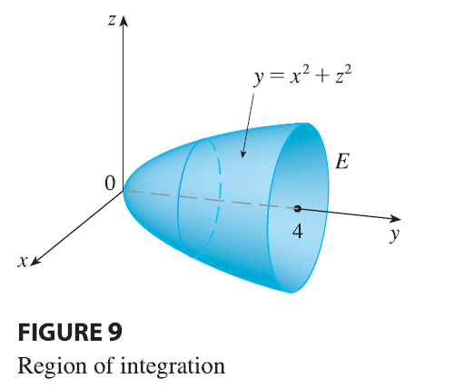
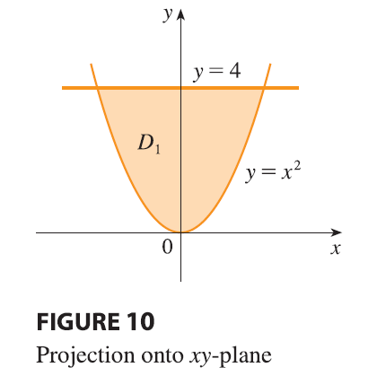
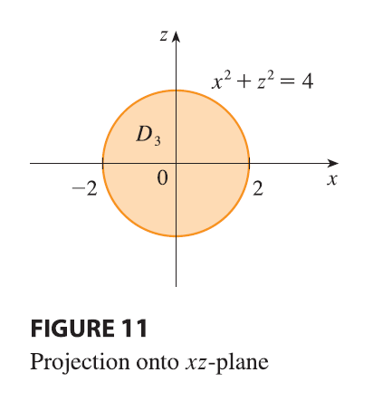

EXAMPLE 3 Evaluate \(\iiint_E \sqrt{x^2 + z^2} dV\), where \(E\) is the region bounded by the paraboloid \(y = x^2 + z^2\) and the plane \(y = 4\).

SOLUTION The solid \(E\) is shown in Figure 9. If we regard it as a type 1 region, then we need to consider its projection \(D_1\) onto the \(xy\)-plane, which is the parabolic region in Figure 10. From \(y = x^2 + z^2\) we obtain \(z = \pm\sqrt{y - x^2}\), so the lower boundary surface of \(E\) is \(z = -\sqrt{y - x^2}\) and the upper surface is \(z = \sqrt{y - x^2}\). Therefore the description of \(E\) as a type 1 region is

\[ E = \{(x, y, z) | -2 \le x \le 2, x^2 \le y \le 4, -\sqrt{y - x^2} \le z \le \sqrt{y - x^2}\} \] and so we obtain \[ \iiint_E \sqrt{x^2 + z^2} dV = \int_{-2}^2 \int_{x^2}^4 \int_{-\sqrt{y-x^2}}^{\sqrt{y-x^2}} \sqrt{x^2 + z^2} dz dy dx \] Although this expression is correct, it is extremely difficult to evaluate. So let’s instead consider \(E\) as a type 3 region. As such, its projection \(D_3\) onto the \(xz\)-plane is the disk \(x^2 + z^2 \le 4\) shown in Figure 11.

Then the left boundary of \(E\) is the paraboloid \(y = x^2 + z^2\) and the right boundary is the plane \(y = 4\), so taking \(u_1(x, z) = x^2 + z^2\) and \(u_2(x, z) = 4\) in Equation 11, we have \[ \iiint_E \sqrt{x^2 + z^2} dV = \iint_{D_3} \left[ \int_{x^2+z^2}^4 \sqrt{x^2 + z^2} dy \right] dA = \iint_{D_3} (4 - x^2 - z^2)\sqrt{x^2 + z^2} dA \] Although this integral could be written as \[ \int_{-2}^2 \int_{-\sqrt{4-x^2}}^{\sqrt{4-x^2}} (4 - x^2 - z^2)\sqrt{x^2 + z^2} dz dx \] it’s easier to convert to polar coordinates in the \(xz\)-plane: \(x = r \cos \theta, z = r \sin \theta\). This gives \[ \iiint_E \sqrt{x^2 + z^2} dV = \iint_{D_3} (4 - x^2 - z^2)\sqrt{x^2 + z^2} dA \] \[ = \int_0^{2\pi} \int_0^2 (4 - r^2)r \cdot r dr d\theta = \int_0^{2\pi} d\theta \int_0^2 (4r^2 - r^4) dr \] \[ = 2\pi \left[ \frac{4r^3}{3} - \frac{r^5}{5} \right]_0^2 = 2\pi \left( \frac{32}{3} - \frac{32}{5} \right) = \frac{128\pi}{15} \]